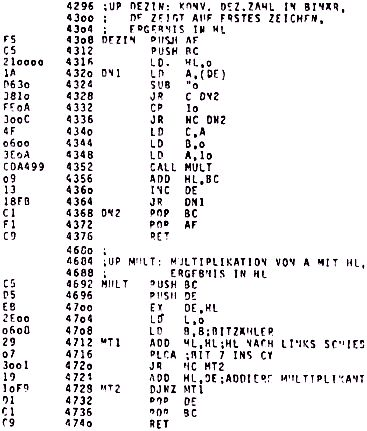

Nascom Journal |
6/80 7/80 |
Durch eine Kombination beider Möglichkeiten lassen sich verblüffend interessante Graphiken auf den Bildschirm zaubern.
Beim Programmieren auf Assembler-Ebene fallen in verschiedenen Programmen immer wieder dieselben Probleme an: Zahlen Ein/Ausgabe, Multiplikation, Division u.s.w.. Damit nicht jeder diese Räder neu erfinden muß, mache ich mal den Anfang mit einer Routine zur Zahleneingabe (ASCII-Ziffern werden in Binärzahl gewandelt) und einer (dazu nötigen) Multiplikationsroutine (ohne Vorzeichen). Multiplikation mit 10 kann man zwar auch einfacher programmieren, aber Multiplikation brauchte ich sowieso. Die beiden UP’s sind Bestandteil eines größeren Programmes (Texteditor); daher auch die krummen Adressen, die ich belassen habe, um Fehler zu vermelden (so gehen die Programme, aber jedes Abtippen ist gefährlich). Bis auf „CALL MULT“, das bei geringerem Abstand mit ’nem relativen CALL zum machen wäre, sind beide UP’s relokatibel. Eigentlich erklären sich beide Programme aus dem Listing, hier noch ein paar Erklärungen:
Zu „DEZIN“: Die zu konvertierende Zahl darf maximal 5 Ziffern (max. 65535) haben und muß irgendwo im Speicher stehen, z.B. auf Zelle 14 des Bildschirms, wenn mit „INLINE“ (Nasbug T4) eingelesen wurde. DE muß auf die erste Ziffer zeigen, Jedes Nichtzifferzeichen beendet die Konversion und DE zeigt auf eben dieses Zeichen.
Zu „MULT“: Falls sich jemand darüber wundert, daß eine 2-Byte-Zahl (in HL) mit nur einem Byte (in A) multipliziert wird: Wenn tatsächlich bei beiden Zahlen das höherwertige Byte !=0 wäre, gäbe es einen Überlauf. Den muß man, je nach Anwendung, sowieso abfangen, und dann nur noch dafür sorgen, daß die kleinere Zahl in A steht.
Das UP „MULT“ stammt nicht von mir sondern ist aus dem Buch „Z-80-Applikationsbuch“ von M. Klein und auch viel eleganter als mein „DEZIN“.
Noch was ganz anderes: Aufpassen bei EPROM’s 2716 (5V)! Diese Typen sind keineswegs pinkompatibel zu 2716 mit 3 Versorgungsspannungen, sogar ein Adreßpin ist verschoben! Daher lassen sie sich auch nicht ohne Umbau im Ploss-EPROM-Programmierer (zumindest meine Version) programmieren.
Michael Bach, __ __________ __, ____ Stegen

wir kennen zwar die aufgabe nicht,
aber wir bringen das doppelte.
operative hektik ………
ersetzt geistige windstille.
bei uns kann Jeder werden was er will,
ob er will oder nicht.
Jeder wird solange gefoerdert,
bis er mit sicherheit unwirksam ist.
die hauptsache ist, es geht vorwaerts —
die richtung ist egal.
| Seite 20 von 52 |
|---|